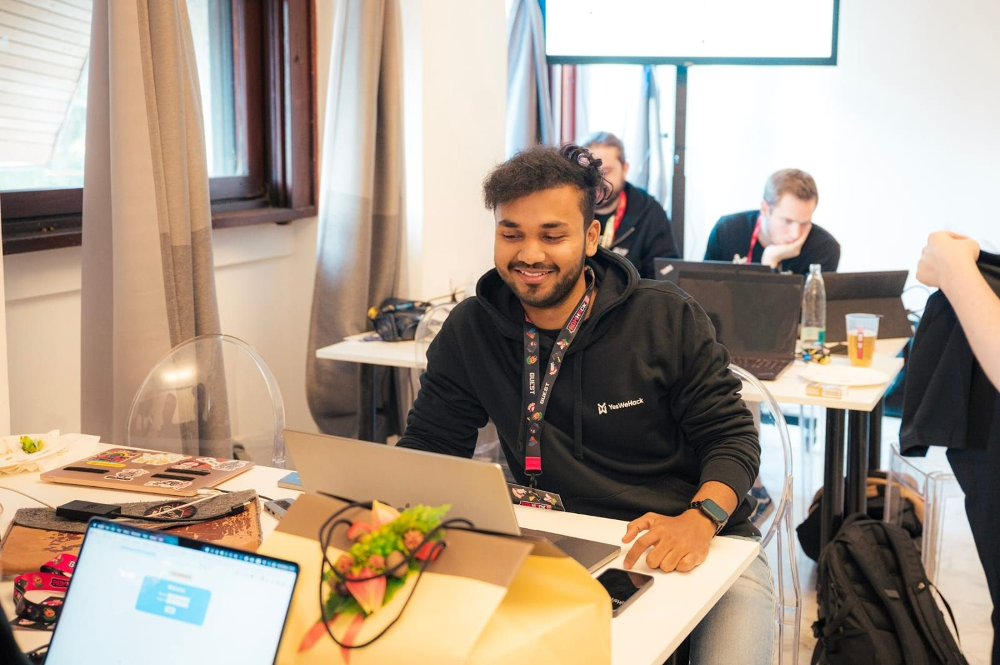

Mobile Navigation Test
Click the hamburger menu (≡) in the top right to test mobile navigation
Test Instructions:
- Click the hamburger menu (three lines) in the top right
- The menu should slide in from the right with a backdrop blur
- Menu items should animate in with staggered delays
- Click any menu item to close the menu
- Click outside the menu to close it
- Press Escape key to close the menu